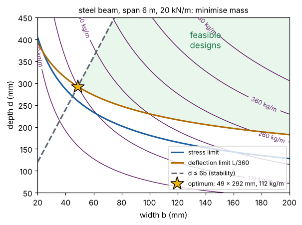
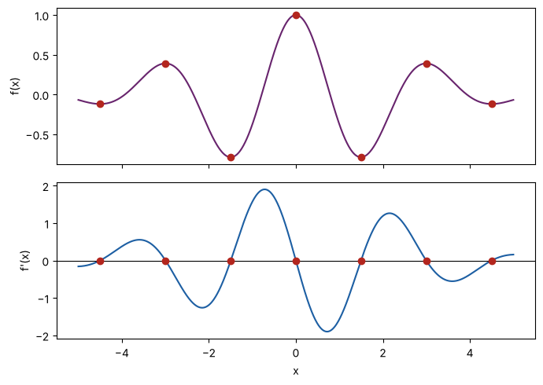
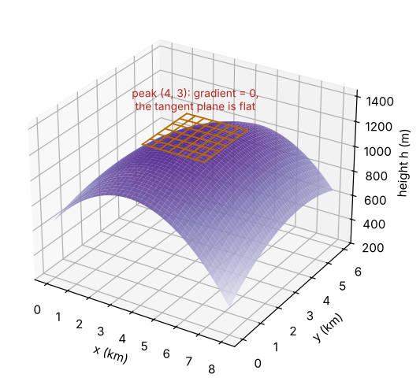
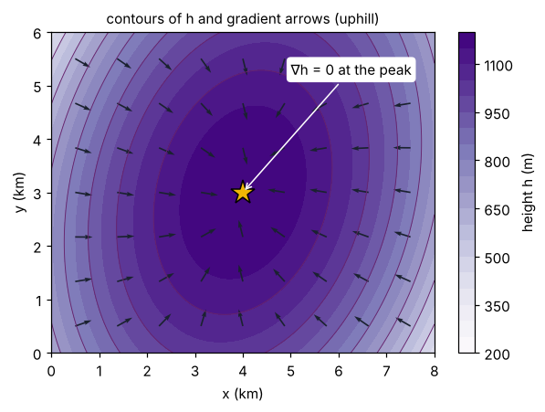
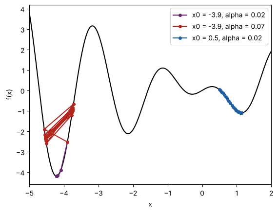
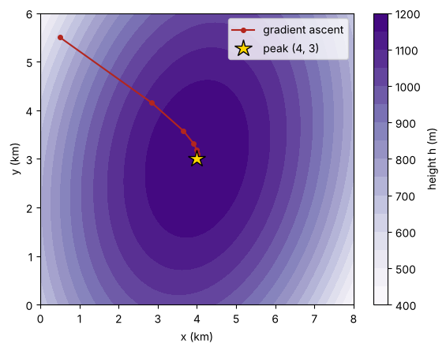
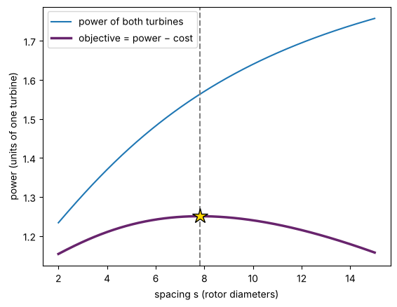

PART A
Finding the best solution
The first six weeks gave us the tools to describe and simulate engineering systems in Python, including systems with uncertainty. This week starts a new part of the module: optimisation, choosing the inputs of a system to get the best possible output. The interactive figures (the turbine spacing, the slope of a curve, gradient descent and Newton’s method step by step) are in the lecture slides.
1What is optimisation?
Optimisation is the process of finding the best solution to a problem according to a criterion, subject to some restrictions. Engineers rarely want just a design that works; they want the lightest structure that carries the load, the cheapest process that meets the specification, the layout that generates the most energy.
1.1 The mountain analogy
Imagine a mountain range. Where you stand, your position \(x\), is the thing you can choose: the decision variable. The height of the ground under your feet, \(f(x)\), is what you want to make as large as possible: the objective function. Optimising means finding the highest point.
The picture already shows the main ideas of this week:
- The global optimum is the highest peak of all. A local optimum is a peak where every small step goes downhill, but which is not the highest. A hiker who always walks uphill stops at the first peak they reach, which may be a local one.
- At the top of every peak the ground is flat: the slope is zero. This is the basis of the closed-form methods (sections 3 and 4).
- A hiker in fog cannot see the peak but can feel the slope under their feet, and climb step by step. This is the basis of the iterative methods (sections 5 to 7).
1.2 Maximise or minimise?
Some objectives should be as large as possible (power, profit, efficiency), others as small as possible (mass, cost, error). The two are the same problem: the highest point of \(f\) is the lowest point of \(-f\). Climbing a mountain is the same as descending into the valley of the upside-down mountain:
By convention, optimisation problems and software are written as minimisation. SciPy only minimises, so to maximise we minimise \(-f\) (section 8.4).
1.3 The general optimisation problem
In general, an optimisation problem is written as
- \(f: \mathbb{R}^n \to \mathbb{R}\) is the objective function (also called the cost or fitness function): one number that measures how good a solution is.
- \(\mathbf{x} = (x_1, x_2, \dots, x_n)\) are the decision variables, the quantities we can choose. Together they span the decision space \(\mathcal{X}\).
- \(g_i(\mathbf{x}) \le 0\) are inequality constraints (a stress must not exceed the allowable stress) and \(h_j(\mathbf{x}) = 0\) equality constraints (the tank must hold exactly 10 m³).
A feasible solution satisfies all the constraints. The optimal solution \(\mathbf{x}^*\) is the feasible solution with the best objective: \(f(\mathbf{x}^*) \le f(\mathbf{x})\) for every feasible \(\mathbf{x}\). In the mountain analogy, the constraints are the fences of a park: the best point you may reach is either a peak inside the park, or a point on the fence. This week we mostly study unconstrained problems, plus simple lower and upper bounds on the variables in SciPy; constraints are developed further next week.
2Engineering examples
Optimisation appears in every branch of engineering. A few examples, each with its decision variables, objective and constraints:
| Problem | Decision variables | Objective | Constraints |
|---|---|---|---|
| Beam design | width \(b\), depth \(d\) | minimise mass | stress, deflection, stability |
| Wind farm layout | turbine spacing | maximise power − cost | site boundary |
| Storage tank | radius \(r\), height \(h\) | minimise sheet metal | volume = 10 m³ |
| Pumping main | pipe diameter | minimise pipe cost + pumping cost | flow rate, velocity limits |
| Construction schedule | crew sizes, start dates | minimise duration or cost | precedence, resources |
| Model fitting (week 6) | distribution parameters | maximise the likelihood | positive scale |
2.1 The lightest beam
A rectangular steel beam spans 6 m and carries 20 kN/m. We choose its width \(b\) and depth \(d\) to minimise the mass, which is proportional to the area \(b\,d\). The bending stress must stay below 165 MPa, the mid-span deflection below \(L/360\), and the section must not be too slender (\(d \le 6b\)) so that it does not buckle sideways.

Two lessons from this picture. First, a deep, narrow section is much more efficient than a square one: a square section that passes the same checks weighs about 275 kg/m, 60 % more steel. Second, the optimum is on the fence: it is limited by two constraints that are active (exactly satisfied). This is typical of constrained engineering problems.
2.2 How far apart should two turbines be?
Every wind turbine leaves behind a wake, a cone of slower, more turbulent air. A turbine standing in the wake of another produces less power, because power grows with the cube of the wind speed. The simplest description is the Jensen (Park) wake model: the wake spreads linearly with distance, and the wind speed deficit at a distance of \(s\) rotor diameters behind a turbine is
with thrust coefficient \(C_T \approx 0.8\) and wake decay constant \(k \approx 0.05\) onshore. The downstream turbine sees a wind speed \((1 - \delta)\) times the free wind, and produces \((1 - \delta)^3\) times the power of the first turbine. Close together, the second turbine loses most of its power; far apart, the farm needs more land and longer cables and fits fewer turbines on the site. With a cost of 0.04 (in units of one turbine’s power) per rotor diameter of spacing, the objective is
The power term increases with \(s\), the cost term decreases: the best spacing balances the two. We find it in section 10, about 7.8 rotor diameters, consistent with the 5 to 10 diameters used in real wind farms along the prevailing wind.
3Closed-form solutions: one variable
When the objective is a known formula that we can differentiate, calculus finds the optimum exactly. Such an exact, formula-based answer is called a closed-form or analytical solution.
3.1 At the top, the slope is zero
Walk along a curve: going uphill the slope is positive, going downhill it is negative, and exactly at the top of a peak (or the bottom of a valley) it is zero: the tangent is horizontal. The slope is the derivative, so every interior optimum of a smooth function satisfies
Points where the derivative is zero are called stationary points. They are the candidates for the optimum: maxima, minima, and occasionally flat inflection points such as \(x = 0\) for \(f(x) = x^3\).
3.2 Maximum or minimum: the second-derivative test
The second derivative is the curvature, the rate at which the slope changes. At a stationary point \(x_s\):
- \(f''(x_s) < 0\): the curve bends downwards, a maximum (a peak);
- \(f''(x_s) > 0\): the curve bends upwards, a minimum (a valley);
- \(f''(x_s) = 0\): the test is inconclusive.
The test tells us whether a stationary point is a local maximum or minimum. To find the global optimum, compare the values of \(f\) at all the candidates, and at the ends of the range if the range is limited.
Example: a damped cosine. Find the maximum of \(f(x) = \cos(2x)\,e^{-0.1x^2}\) on \([-5, 5]\). By the product rule,
The exponential is never zero, so the stationary points satisfy \(2\sin 2x + 0.2x\cos 2x = 0\). At \(x = 0\) both terms vanish, so \(x_s = 0\) is a stationary point. The second derivative there is \(f''(0) = -4.2 < 0\), a maximum, with \(f(0) = 1\). The other peaks, near \(x = \pm 3\), are lower (about 0.39) because of the damping, so \(x^* = 0\) is the global maximum.
The other roots of \(2\sin 2x + 0.2x\cos 2x = 0\) have no neat formula: we can only find them numerically. That is a first hint of why we need iterative methods.
Plotting the function and its derivative together shows the idea: every peak and valley of \(f\) sits exactly above a zero crossing of \(f'\). The code finds the sign changes of \(f'\) on a fine grid and refines each one with brentq, a root finder from scipy.optimize: a numerical answer to the equation we could not solve by hand.
import numpy as np
import matplotlib.pyplot as plt
from scipy.optimize import brentq
f = lambda x: np.cos(2 * x) * np.exp(-0.1 * x**2)
df = lambda x: -np.exp(-0.1 * x**2) * (2 * np.sin(2 * x)
+ 0.2 * x * np.cos(2 * x))
x = np.linspace(-5, 5, 1000)
# stationary points: f' changes sign between two grid points,
# then brentq refines each one
i = np.where(df(x[:-1]) * df(x[1:]) < 0)[0]
xs = np.array([brentq(df, x[j], x[j + 1]) for j in i])
print("stationary points: x =", np.round(xs, 3))
print("f at these points: ", np.round(f(xs), 3))
best = xs[np.argmax(f(xs))]
print("global maximum: x = %.3f, f = %.3f" % (best, f(best)))
fig, ax = plt.subplots(2, 1, sharex=True, figsize=(7, 5))
ax[0].plot(x, f(x), color="#68246D")
ax[0].plot(xs, f(xs), "o", color="#B3261E")
ax[0].set_ylabel("f(x)")
ax[1].plot(x, df(x), color="#1D5FA3")
ax[1].axhline(0, color="black", lw=0.8)
ax[1].plot(xs, df(xs), "o", color="#B3261E")
ax[1].set_ylabel("f'(x)")
ax[1].set_xlabel("x")
plt.tight_layout()
plt.show()stationary points: x = [-4.501 -2.996 -1.497 0. 1.497 2.996 4.501] f at these points: [-0.12 0.39 -0.791 1. -0.791 0.39 -0.12 ] global maximum: x = 0.000, f = 1.000

3.3 An engineering example: the cheapest tank
A closed cylindrical tank must hold \(V = 10\) m³. Which radius \(r\) and height \(h\) need the least sheet metal, the smallest surface area?
The volume is an equality constraint. Use it to remove one variable, \(h = V/(\pi r^2)\), which leaves an unconstrained problem in \(r\) alone (substitution):
Then \(h^* = V/(\pi r^{*2}) = 2r^* = 2.34\) m and \(A^* = 25.7\) m². The second derivative \(A''(r) = 4\pi + 4V/r^3\) is positive for every \(r > 0\), so this is a minimum. The cheapest closed tank is as tall as it is wide, which is why so many cans are nearly “square”. Real tanks deviate from it because the ends cost more than the wall, or because of transport limits: change the objective and the optimum moves.
4Closed-form solutions: several variables
Most engineering problems have more than one decision variable. Consider a smooth mountain whose height \(h(x, y)\) depends on two coordinates, east \(x\) and north \(y\) (in km):
4.1 Partial derivatives and the gradient
The partial derivative \(\partial h/\partial x\) is the slope when walking east with \(y\) held fixed; \(\partial h/\partial y\) is the slope walking north. Together they form the gradient, a vector:
The gradient points uphill, in the direction of steepest ascent, and its length is the steepness. For a scalar function such as \(h\), the gradient is the (transposed) Jacobian: the matrix of all first derivatives, which for one output has a single row. At a peak the ground is flat in every direction, the tangent plane is horizontal, and the gradient is the zero vector:

4.2 Solving ∇h = 0
Setting both partial derivatives to zero gives two equations in two unknowns:
For this mountain the equations are linear, so they can be solved by hand or as a matrix system: \(x^* = 4\) km, \(y^* = 3\) km and \(h^* = 1200\) m.
import numpy as np
# -60x + 10y = -210 and 10x - 40y = -80
A = np.array([[-60, 10],
[10, -40]])
b = np.array([-210, -80])
x_star, y_star = np.linalg.solve(A, b)
h = lambda x, y: -30*x**2 - 20*y**2 + 10*x*y + 210*x + 80*y + 660
print("peak at x = %.2f km, y = %.2f km, height %.0f m"
% (x_star, y_star, h(x_star, y_star)))peak at x = 4.00 km, y = 3.00 km, height 1200 m

4.3 Peak or valley: the Hessian
In several variables the role of \(f''\) is played by the Hessian, the matrix of second partial derivatives:
If all eigenvalues of \(H\) are negative (the surface curves down in every direction), the stationary point is a maximum; if all are positive, a minimum; if they have mixed signs, a saddle point (a mountain pass: up in one direction, down in another). Here the eigenvalues are −64.1 and −35.9: a maximum. In code: np.linalg.eigvals(H).
This mountain is unusually kind: its gradient is linear, so \(\nabla h = \mathbf{0}\) is a linear system. For most functions the equations \(\nabla f = \mathbf{0}\) are non-linear, have many solutions, or cannot be written down at all. That is where the next sections come in.
5Iterative methods: when there is no closed form
Closed-form solutions are exact and fast, but they need a formula we can differentiate and equations \(f'(x) = 0\) or \(\nabla f = \mathbf{0}\) that we can solve. In engineering this often fails:
- The equation has no algebraic solution. For \(f(x) = x\cos 3x\), setting the derivative to zero gives \(\cos 3x - 3x\sin 3x = 0\), which cannot be rearranged for \(x\).
- There is no formula at all. The objective is the output of a simulation: a Monte Carlo model like last week’s wind farm, a finite element analysis, or the productivity of a construction site as a function of the crew size, which can only be evaluated by running a model.
- There are too many variables. Designing a truss, a water network or a neural network can involve thousands or millions of variables; even if the equations could be written, solving them simultaneously is impractical.
Iterative methods avoid solving the equations. Back to the mountain, now covered in fog: you cannot see the peak, but you can feel the slope of the ground under your feet. Take a step uphill, feel the slope again, take another step, and stop when the ground is flat. Every iterative optimisation method has the same three ingredients:
- An initial guess \(x_0\), the starting point.
- An update rule \(x_{k+1} = x_k + \text{step}_k\) that moves to a (usually) better point using local information: the value, the slope, perhaps the curvature.
- A stopping criterion: stop when the steps or the slope become negligibly small (convergence), or after a maximum number of iterations.
Iterative methods give an approximate answer, as accurate as the stopping tolerance, and usually a local optimum: the one nearest to where they start. Trying several starting points is the simplest protection against a poor local optimum.
For the rest of Part A we use the handout’s example: minimise \(f(x) = x\cos 3x\) on \([-5, 2]\). It has several valleys; the deepest, the global minimum, is at \(x^* = -4.2151\) with \(f(x^*) = -4.2020\). Its first and second derivatives are
6Gradient descent
The gradient points uphill. To minimise a function, take a step in the opposite direction, downhill:
The positive constant \(\alpha\) is the learning rate or step size. The step is \(\alpha\) times the slope, so the method takes large steps where the ground is steep and small steps near the bottom, where the slope tends to zero. To maximise, step with the gradient instead (gradient ascent), \(\mathbf{x}_{k+1} = \mathbf{x}_k + \alpha\,\nabla f(\mathbf{x}_k)\), or minimise \(-f\).
The algorithm:
- Start from an initial guess \(x_0\).
- Calculate the gradient (in 1-D, the derivative) at the current point.
- Update \(x_{k+1} = x_k - \alpha f'(x_k)\).
- Repeat steps 2 and 3 until the step is smaller than a tolerance, or a maximum number of iterations is reached.
6.1 Gradient descent by hand
Two functions and a for loop. The loop prints every iteration, so you can watch \(x\) settle and the slope shrink to zero.
import numpy as np
def f(x):
return x * np.cos(3 * x)
def grad(x): # f'(x)
return np.cos(3 * x) - 3 * x * np.sin(3 * x)
x = -3.9 # initial guess
alpha = 0.02 # learning rate
print(" k x f(x) f'(x)")
for k in range(1, 51):
step = alpha * grad(x)
x = x - step # move against the gradient
print("%2d %10.5f %10.5f %10.5f" % (k, x, f(x), grad(x)))
if abs(step) < 1e-6: # converged: tiny step
breakk x f(x) f'(x) 1 -4.09126 -3.91736 4.49780 2 -4.18121 -4.18013 1.28489 3 -4.20691 -4.20070 0.31281 4 -4.21317 -4.20191 0.07385 5 -4.21464 -4.20197 0.01733 6 -4.21499 -4.20198 0.00406 7 -4.21507 -4.20198 0.00095 8 -4.21509 -4.20198 0.00022 9 -4.21509 -4.20198 0.00005 10 -4.21510 -4.20198 0.00001 11 -4.21510 -4.20198 0.00000
Eleven iterations from \(x_0 = -3.9\) to the global minimum \(x^* = -4.21510\). Note how the slope in the last column falls by a roughly constant factor (about 4) each step: gradient descent converges linearly.
6.2 Choosing the learning rate
The learning rate is the one thing we must tune, and the result depends strongly on it:
| α | From x₀ = −3.9 |
|---|---|
| 0.004 | converges, but slowly: 68 iterations |
| 0.01 | 26 iterations (the handout’s value) |
| 0.02 | 11 iterations |
| 0.04 | overshoots and oscillates around the minimum, settles after 21 iterations |
| 0.06–0.10 | bounces from one side of the valley to the other for ever |
| ≥ 0.12 | the first step jumps out of the valley: the method diverges |
Too small and convergence is very slow; too large and the method oscillates or diverges. A good learning rate depends on the curvature of the function: near the minimum, gradient descent is stable only if \(\alpha < 2/f''(x^*)\), here \(2/38.3 = 0.052\). Practical solvers choose the step size automatically at each iteration (a line search), as SciPy does.
The starting point matters too. From \(x_0 = 0.5\) gradient descent rolls into the valley near \(x = 1.14\), a local minimum with \(f = -1.10\), far from the global minimum.
Differs from the PDF. The handout’s first code example defines \(f(x) = x^2\) but labels and plots \(x\cos 3x\); here both the code and the plots use \(x\cos 3x\). The handout also says that gradient descent “does not converge after 10 iterations”, while its code runs 50: with \(\alpha = 0.01\) it needs 26 iterations, with \(\alpha = 0.02\) eleven.
Exercise 6.1. Explore gradient descent on \(f(x) = x\cos 3x\).
- Run the loop with \(\alpha = 0.01, 0.04, 0.07\) and \(0.12\). Describe what happens in each case.
- Start from \(x_0 = 0.5\) and from \(x_0 = -2\). Which minima do you find?
- Store every \(x_k\) in a list and plot the path on top of the curve.
import numpy as np
import matplotlib.pyplot as plt
def f(x):
return x * np.cos(3 * x)
def grad(x):
return np.cos(3 * x) - 3 * x * np.sin(3 * x)
# Write your code hereShow a solution
import numpy as np
import matplotlib.pyplot as plt
def f(x):
return x * np.cos(3 * x)
def grad(x):
return np.cos(3 * x) - 3 * x * np.sin(3 * x)
def gradient_descent(x, alpha, n_max=50, tol=1e-6):
path = [x]
for k in range(n_max):
step = alpha * grad(x)
x = x - step
path.append(x)
if abs(step) < tol:
break
return np.array(path)
xs = np.linspace(-5, 2, 500)
plt.plot(xs, f(xs), color="black", lw=1.5)
runs = [(-3.9, 0.02, "#68246D"), (-3.9, 0.07, "#B3261E"), (0.5, 0.02, "#1D5FA3")]
for x0, alpha, colour in runs:
path = gradient_descent(x0, alpha)
print("x0 = %5.2f, alpha = %.2f: %2d iterations, end at x = %.4f"
% (x0, alpha, len(path) - 1, path[-1]))
plt.plot(path, f(path), "o-", ms=4, color=colour,
label="x0 = %g, alpha = %g" % (x0, alpha))
plt.xlim(-5, 2)
plt.ylim(-4.6, 4.2)
plt.xlabel("x")
plt.ylabel("f(x)")
plt.legend()
plt.show()x0 = -3.90, alpha = 0.02: 11 iterations, end at x = -4.2151 x0 = -3.90, alpha = 0.07: 50 iterations, end at x = -3.7525 x0 = 0.50, alpha = 0.02: 50 iterations, end at x = 1.1419

With \(\alpha = 0.07\) the iterates jump back and forth across the valley and never settle within 50 iterations. From \(x_0 = 0.5\) the method finds the local minimum at 1.14; from \(x_0 = -2\) it finds the local minimum near \(-2.1\).
7Newton’s method
Gradient descent only uses the slope. Newton’s method also uses the curvature. Near the current point \(x_k\), approximate \(f\) by the parabola that has the same value, slope and curvature (the second-order Taylor expansion):
The stationary point of the parabola is easy to find: \(q'(x) = f'(x_k) + f''(x_k)(x - x_k) = 0\). Jump there, build a new parabola, and repeat:
With \(n\) variables the Hessian matrix \(H\) replaces \(f''\), and its inverse multiplies the gradient:
In practice we never compute the inverse: we solve the linear system \(H\,\Delta\mathbf{x} = \nabla f\) for the step, with np.linalg.solve(H, g). In the mountain analogy, the hiker feels both the slope and how the ground bends, imagines the shape of the hill, and walks straight to where its top should be.
- No learning rate to choose: the curvature sets the step.
- Very fast near the optimum: convergence is quadratic, the error is roughly squared at each step, so the number of correct digits roughly doubles.
- Exact in one step for a quadratic function, because the parabola is the function itself.
The drawbacks: it needs the second derivatives, which for \(n\) variables means an \(n \times n\) Hessian to compute and a linear system to solve at every step. And it finds stationary points, where \(f' = 0\), so it may converge to a maximum (or a saddle point) when we want a minimum. This happens when \(f''(x_k) < 0\): the parabola opens downwards and its stationary point is its top. When \(f''\) is close to zero, the step becomes huge.
Differs from the PDF. The handout writes the update as \(x_{k+1} = x_k - \nabla f/\nabla^2 f\). That division is only meaningful in one variable; with several variables the update uses the inverse of the Hessian matrix, \(\mathbf{x}_{k+1} = \mathbf{x}_k - H^{-1}\nabla f\).
7.1 Newton’s method by hand
import numpy as np
def f(x):
return x * np.cos(3 * x)
def grad(x): # f'(x)
return np.cos(3 * x) - 3 * x * np.sin(3 * x)
def hessian(x): # f''(x)
return -6 * np.sin(3 * x) - 9 * x * np.cos(3 * x)
x = -3.9 # initial guess
print(" k x f(x) f'(x) f''(x)")
for k in range(1, 21):
step = grad(x) / hessian(x)
x = x - step # stationary point of the parabola
print("%2d %10.5f %10.5f %10.1e %8.2f"
% (k, x, f(x), grad(x), hessian(x)))
if abs(step) < 1e-8:
breakk x f(x) f'(x) f''(x) 1 -4.42662 -3.34687 -7.9e+00 34.05 2 -4.19356 -4.19313 8.2e-01 37.82 3 -4.21524 -4.20198 -5.4e-03 38.29 4 -4.21510 -4.20198 -1.8e-07 38.29 5 -4.21510 -4.20198 2.2e-14 38.29
The same minimum in four steps (the fifth only confirms it), against eleven for gradient descent with our best learning rate. The slope column shows the quadratic convergence: \(8 \times 10^{-1}\), \(5 \times 10^{-3}\), \(2 \times 10^{-7}\), \(2 \times 10^{-14}\). The last column, \(f''(x^*) = 38.3 > 0\), confirms a minimum.
Now change the initial guess to x = 0.5. There \(f''(0.5) = -6.3 < 0\), and Newton’s method converges just as quickly, to \(x = 0.2868\), \(f = 0.187\): a local maximum. It found exactly what it looks for, a point where the slope is zero, just not what we wanted. Gradient descent from the same start went downhill to the minimum at 1.14. A safer version of Newton’s method checks the sign of \(f''(x_k)\) and takes a gradient step instead when it is not positive; library implementations include such safeguards.
7.2 Comparing the two methods
| Gradient descent | Newton’s method | |
|---|---|---|
| Update | \(x_{k+1} = x_k - \alpha f'(x_k)\) | \(x_{k+1} = x_k - f'(x_k)/f''(x_k)\) |
| Uses | first derivative (gradient) | first and second derivatives (Hessian) |
| Tuning | learning rate α | none |
| Convergence | linear: slow near the optimum (11 steps here) | quadratic: very fast near the optimum (4 steps here) |
| Cost per step | low, even with millions of variables | high: build and solve with an n × n Hessian |
| Finds | a minimum, in the valley where it starts | a stationary point: minimum, maximum or saddle |
| Fails when | α too large (diverges) or too small (very slow) | f″ ≈ 0, f″ < 0, or a poor starting point |
Practical solvers combine the strengths of both. Quasi-Newton methods such as BFGS build an approximation of the Hessian from the gradients of successive iterations: nearly Newton’s speed at the cost of gradient descent. BFGS is SciPy’s default method.
8Optimisation with scipy.optimize
Writing the loops ourselves shows how the methods work. For real problems, use the tested implementations in scipy.optimize: they choose step sizes automatically, include safeguards, and report whether they succeeded.
8.1 What is available
The main function is minimize(fun, x0, method=..., jac=..., hess=..., bounds=..., constraints=...). Its methods differ in the information they use and the restrictions they accept:
| method | Type | Uses | Bounds | Constraints |
|---|---|---|---|---|
"Nelder-Mead" | direct search (simplex) | values of f only | yes | no |
"Powell" | direct search | values of f only | yes | no |
"CG" | conjugate gradient | gradient | no | no |
"BFGS" | quasi-Newton (the default) | gradient, estimated Hessian | no | no |
"Newton-CG" | Newton | gradient and Hessian | no | no |
"L-BFGS-B" | limited-memory quasi-Newton | gradient | yes | no |
"TNC" | truncated Newton | gradient | yes | no |
"SLSQP" | sequential quadratic programming | gradient | yes | yes |
"trust-constr" | trust region | gradient, Hessian | yes | yes |
If you do not give the gradient (jac), the gradient-based methods estimate it by finite differences, which works but costs extra function evaluations. Other useful functions in the module:
minimize_scalar: one variable, optionally within an interval (bounds=(a, b));root,brentq,fsolve: solve equations, for example \(f'(x) = 0\) or \(\nabla f = \mathbf{0}\);curve_fit,least_squares: fit a model to data;linprog,milp: linear and mixed-integer linear programming;differential_evolution,basinhopping,dual_annealing: global optimisation for functions with many local optima.
8.2 minimize with a gradient method and Newton’s method
minimize always works with an array of variables, even for a single variable, so the objective receives an array x and uses x[0]. The gradient jac returns an array with one entry per variable, and the Hessian hess an \(n \times n\) matrix.
import numpy as np
from scipy.optimize import minimize
def f(x): # x is an array: x[0] is our variable
return x[0] * np.cos(3 * x[0])
def jac(x): # gradient: an array
t = x[0]
return np.array([np.cos(3 * t) - 3 * t * np.sin(3 * t)])
def hess(x): # Hessian: a matrix
t = x[0]
return np.array([[-6 * np.sin(3 * t) - 9 * t * np.cos(3 * t)]])
x0 = np.array([-3.9])
res_cg = minimize(f, x0, method="CG", jac=jac)
res_nt = minimize(f, x0, method="Newton-CG", jac=jac, hess=hess)
for name, r in [("CG", res_cg), ("Newton-CG", res_nt)]:
print("%-9s x = %.5f f = %.5f nit = %d success = %s"
% (name, r.x[0], r.fun, r.nit, r.success))CG x = -4.21510 f = -4.20198 nit = 5 success = True Newton-CG x = -4.21510 f = -4.20198 nit = 4 success = True
Both reach the minimum found by our own loops. The conjugate gradient method needs only 5 iterations, compared with 11 for our plain gradient descent, because it chooses its own step sizes and remembers previous directions.
8.3 The result object
minimize returns an OptimizeResult. Print it (print(res_cg)) to see all its fields; the most useful are:
| Field | Meaning |
|---|---|
x | the solution, an array |
fun | the objective at the solution |
success | True if the solver converged; always check it before trusting x |
message | why the solver stopped |
nit, nfev | number of iterations, number of function evaluations |
jac | the gradient at the solution, which should be close to zero |
8.4 Bounds and maximisation
Lower and upper bounds on the variables are given as a list with one (lower, upper) pair per variable; use None for no bound. Not all methods accept them: use L-BFGS-B, TNC, SLSQP, trust-constr, Nelder-Mead or Powell. Bounds can change the answer: minimising \(x\cos 3x\) from \(x_0 = -4\) with bounds \((-4, 2)\) stops on the bound at \(x = -4\), because the true minimum at \(-4.215\) is outside the allowed range: the fence of the park again.
import numpy as np
from scipy.optimize import minimize
f = lambda x: x[0] * np.cos(3 * x[0])
free = minimize(f, x0=[-4], method="BFGS")
bounded = minimize(f, x0=[-4], method="L-BFGS-B", bounds=[(-4, 2)])
print("BFGS, no bounds: x = %.4f, f = %.4f" % (free.x[0], free.fun))
print("L-BFGS-B, -4 <= x <= 2: x = %.4f, f = %.4f"
% (bounded.x[0], bounded.fun))BFGS, no bounds: x = -4.2151, f = -4.2020 L-BFGS-B, -4 <= x <= 2: x = -4.0000, f = -3.3754
SciPy only minimises. To maximise \(f\), minimise \(-f\) and change the sign of res.fun back. For example, the global maximum of the damped cosine of section 3:
import numpy as np
from scipy.optimize import minimize
f = lambda x: np.cos(2 * x[0]) * np.exp(-0.1 * x[0]**2)
res = minimize(lambda x: -f(x), x0=[0.4])
print("maximum at x = %.4f, f = %.4f" % (res.x[0], -res.fun))maximum at x = 0.0000, f = 1.0000
Differs from the PDF. The handout’s SciPy examples start from \(x_0 = 10\), outside the stated range \([-5, 2]\), and its second figure spans \(-10\) to \(10\). Here the examples start inside the range, from \(x_0 = -3.9\), so that SciPy and our own loops solve the same problem and can be compared directly.
Exercise 8.1. Local and global optima with SciPy.
- Maximise \(f(x) = \cos(2x)\,e^{-0.1x^2}\) with
minimizestarting from \(x_0 = 2.5\). Which peak do you find? - Repeat from 20 starting points between −5 and 5 and keep the best result.
- Use
minimize_scalarwithbounds=(-5, 5)on \(-f\). Does it find the global maximum?
import numpy as np
from scipy.optimize import minimize, minimize_scalar
f = lambda x: np.cos(2 * x) * np.exp(-0.1 * x**2)
# Write your code hereShow a solution
import numpy as np
from scipy.optimize import minimize, minimize_scalar
f = lambda x: np.cos(2 * x) * np.exp(-0.1 * x**2)
# 1. one start
res = minimize(lambda x: -f(x[0]), x0=[2.5])
print("from 2.5: x = %.4f, f = %.4f" % (res.x[0], -res.fun))
# 2. multi-start: keep the best of 20 local searches
best = None
for x0 in np.linspace(-5, 5, 20):
r = minimize(lambda x: -f(x[0]), x0=[x0])
if best is None or r.fun < best.fun:
best = r
print("best of 20 starts: x = %.4f, f = %.4f" % (best.x[0], -best.fun))
# 3. bounded scalar search
r = minimize_scalar(lambda x: -f(x), bounds=(-5, 5), method="bounded")
print("minimize_scalar: x = %.4f, f = %.4f" % (r.x, -r.fun))from 2.5: x = 2.9960, f = 0.3904 best of 20 starts: x = -0.0000, f = 1.0000 minimize_scalar: x = 2.9960, f = 0.3904
From 2.5 the search climbs the nearest peak, at \(x \approx 3.0\). The multi-start search finds the global maximum at \(x = 0\). The bounded scalar method is also a local method: it finds a peak inside the interval, which need not be the highest one. Only checking several candidates, or a global method, protects against local optima.
PART B
Applications
Two applications: the iterative methods in two variables on the smooth mountain of section 4, and the turbine spacing problem of section 2 solved with SciPy.
9Climbing the mountain in two dimensions
The methods of sections 6 and 7 work in any number of dimensions: replace the derivative by the gradient vector and the second derivative by the Hessian matrix. On the smooth mountain of section 4 we want the highest point, so we use gradient ascent, \(\mathbf{x}_{k+1} = \mathbf{x}_k + \alpha\,\nabla h(\mathbf{x}_k)\), starting from the south-west corner, \(\mathbf{x}_0 = (0.5, 5.5)\) km.
x = np.array([0.5, 5.5]) # initial guess (km)
alpha = 0.01 # learning rate
path = [x]
print(" k x y height |grad|")
for k in range(1, 101):
step = alpha * grad_h(x)
x = x + step # uphill: gradient ascent
path.append(x)
print("%2d %7.3f %7.3f %8.1f %8.2f"
% (k, x[0], x[1], h(x), np.linalg.norm(grad_h(x))))
if np.linalg.norm(step) < 1e-4:
break
path = np.array(path)
X, Y = np.meshgrid(np.linspace(0, 8, 200), np.linspace(0, 6, 200))
plt.contourf(X, Y, h([X, Y]), levels=15, cmap="Purples")
plt.colorbar(label="height h (m)")
plt.plot(path[:, 0], path[:, 1], "o-", color="#B3261E", ms=4,
label="gradient ascent")
plt.plot(4, 3, "*", color="gold", ms=16, mec="black", label="peak (4, 3)")
plt.xlabel("x (km)")
plt.ylabel("y (km)")
plt.legend()
plt.show()k x y height |grad| 1 2.850 4.150 1120.7 98.93 2 3.655 3.575 1187.8 37.41 3 3.920 3.311 1197.6 15.42 4 3.999 3.178 1199.4 7.38 5 4.017 3.107 1199.8 4.10 6 4.018 3.066 1199.9 2.49 7 4.014 3.041 1200.0 1.57 8 4.010 3.026 1200.0 1.00 9 4.006 3.017 1200.0 0.64 10 4.004 3.011 1200.0 0.41 11 4.003 3.007 1200.0 0.26 12 4.002 3.004 1200.0 0.17 13 4.001 3.003 1200.0 0.11 14 4.001 3.002 1200.0 0.07 15 4.000 3.001 1200.0 0.04 16 4.000 3.001 1200.0 0.03 17 4.000 3.000 1200.0 0.02 18 4.000 3.000 1200.0 0.01 19 4.000 3.000 1200.0 0.01 20 4.000 3.000 1200.0 0.00

Twenty iterations to the peak. The path does not head straight for it: each step is perpendicular to the contour through the current point, so the path bends as the contours change direction. On long, narrow ridges (contours like stretched ellipses) gradient methods zig-zag and become very slow; that is one reason why curvature information helps.
Newton’s method uses the Hessian. Because this mountain is a quadratic function, its parabola (here a paraboloid) is exact, and a single Newton step lands on the peak from any starting point:
x = np.array([0.5, 5.5])
for k in range(1, 4):
step = np.linalg.solve(hess_h(x), grad_h(x)) # H step = gradient
x = x - step
print("%d x = %.4f, y = %.4f, height = %.2f, |grad| = %.1e"
% (k, x[0], x[1], h(x), np.linalg.norm(grad_h(x))))1 x = 4.0000, y = 3.0000, height = 1200.00, |grad| = 1.4e-14 2 x = 4.0000, y = 3.0000, height = 1200.00, |grad| = 0.0e+00 3 x = 4.0000, y = 3.0000, height = 1200.00, |grad| = 0.0e+00
The same with SciPy: maximise \(h\) by minimising \(-h\), with the gradient \(-\nabla h\):
from scipy.optimize import minimize
res = minimize(lambda p: -h(p), x0=[0.5, 5.5],
jac=lambda p: -grad_h(p), method="BFGS")
print("peak at", np.round(res.x, 4), "height %.1f m" % -res.fun)
print("iterations:", res.nit, "success:", res.success)peak at [4. 3.] height 1200.0 m iterations: 5 success: True
Exercise 9.1. Run the gradient ascent with \(\alpha = 0.02\), \(0.03\) and \(0.035\). How many iterations does each need? What happens with 0.035, and why? (Hint: the largest eigenvalue of the Hessian, in absolute value, is 64.1, and \(2/64.1 = 0.031\).)
# h(p), grad_h(p) and hess_h(p) are ready to use
x = np.array([0.5, 5.5])
# Write your code hereShow a solution
def ascent(alpha, x0=(0.5, 5.5), n_max=200, tol=1e-4):
x = np.array(x0)
for k in range(1, n_max + 1):
step = alpha * grad_h(x)
x = x + step
if np.linalg.norm(step) < tol or np.linalg.norm(x) > 1e6:
break
return k, x
for alpha in [0.01, 0.02, 0.03, 0.035]:
k, x = ascent(alpha)
print("alpha = %.3f: %3d iterations, end at (%.3g, %.3g)"
% (alpha, k, x[0], x[1]))alpha = 0.010: 20 iterations, end at (4, 3) alpha = 0.020: 10 iterations, end at (4, 3) alpha = 0.030: 145 iterations, end at (4, 3) alpha = 0.035: 57 iterations, end at (1.03e+06, -4.26e+05)
\(\alpha = 0.02\) is the fastest here (10 iterations). At 0.03 the steps overshoot across the narrow direction of the mountain and the iterates oscillate, so convergence slows down again. Above \(2/64.1 = 0.031\), every overshoot is larger than the last and the method diverges: in two dimensions the largest curvature limits the learning rate.
10The best spacing of two wind turbines
Back to the problem of section 2.2: the power of two turbines in a row, with the Jensen wake deficit, minus a cost proportional to their spacing \(s\) (in rotor diameters). Setting \(dJ/ds = 0\) by hand is possible but messy; SciPy does not need the derivative. We maximise \(J\) by minimising \(-J\), with the spacing bounded between 2 and 15 diameters.
from scipy.optimize import minimize
res = minimize(lambda s: -objective(s[0]), x0=[3],
method="L-BFGS-B", bounds=[(2, 15)])
s_best = res.x[0]
print("best spacing: %.2f rotor diameters" % s_best)
print("objective: %.3f, success: %s" % (-res.fun, res.success))
P2 = (1 - deficit(s_best))**3
print("power of the second turbine: %.0f %% of the first" % (100 * P2))
s = np.linspace(2, 15, 300)
plt.plot(s, 1 + (1 - deficit(s))**3, label="power of both turbines")
plt.plot(s, objective(s), lw=2.5, color="#68246D", label="objective = power − cost")
plt.axvline(s_best, color="gray", ls="--")
plt.plot(s_best, -res.fun, "*", ms=16, color="gold", mec="black")
plt.xlabel("spacing s (rotor diameters)")
plt.ylabel("power (units of one turbine)")
plt.legend()
plt.show()best spacing: 7.82 rotor diameters objective: 1.251, success: True power of the second turbine: 56 % of the first

The best spacing is about 7.8 rotor diameters, where the second turbine produces 56 % of the power of the first. Spacing them further apart would raise the power a little, but the extra cost would outweigh it.
An optimum is only as good as the model and its parameters. A quick sensitivity analysis, re-optimising for different spacing costs, shows how strongly the answer depends on the cost assumption:
from scipy.optimize import minimize
for cost in [0.02, 0.03, 0.04, 0.05, 0.06]:
res = minimize(lambda s: -objective(s[0], cost=cost), x0=[3],
method="L-BFGS-B", bounds=[(2, 15)])
print("cost %.2f per D: best spacing %5.2f D" % (cost, res.x[0]))cost 0.02 per D: best spacing 13.82 D cost 0.03 per D: best spacing 10.22 D cost 0.04 per D: best spacing 7.82 D cost 0.05 per D: best spacing 5.96 D cost 0.06 per D: best spacing 4.36 D
Cheaper land pushes the turbines apart, dearer land pulls them together. Real wind farm layouts are optimised with many turbines, the full wind rose (wind from every direction, weighted by how often it blows), the site boundary and cable costs: the same idea with hundreds of decision variables and constraints, which is exactly where iterative methods and libraries such as scipy.optimize are indispensable.
Exercise 10.1. Offshore, the wake decays more slowly (\(k \approx 0.04\)). Find the best spacing offshore for a cost of 0.04 per diameter. Then solve the problem with minimize_scalar instead of minimize.
from scipy.optimize import minimize, minimize_scalar
# objective(s, Ct=0.8, k=0.05, cost=0.04) is ready to use
# Write your code hereShow a solution
from scipy.optimize import minimize, minimize_scalar
res = minimize(lambda s: -objective(s[0], k=0.04), x0=[3],
method="L-BFGS-B", bounds=[(2, 15)])
print("offshore, minimize: %.2f D" % res.x[0])
r = minimize_scalar(lambda s: -objective(s, k=0.04),
bounds=(2, 15), method="bounded")
print("offshore, minimize_scalar: %.2f D" % r.x)offshore, minimize: 7.45 D offshore, minimize_scalar: 7.45 D
With a slower wake recovery, the second turbine needs to be further away to escape the wake, so the best spacing increases. Both functions agree; minimize_scalar is the simpler choice for a single variable, and needs no starting point when it is given bounds.
11Further reading
- Nocedal, J. and Wright, S. J. (2006). Numerical Optimization, 2nd edition. Springer. Chapters 2 and 3 (line search, gradient and Newton methods).
- Rao, S. S. (2019). Engineering Optimization: Theory and Practice, 5th edition. Wiley.
- Kiusalaas, J. (2013). Numerical Methods in Engineering with Python 3. Cambridge University Press. Chapter 10, Introduction to optimization.
- Jensen, N. O. (1983). A Note on Wind Generator Interaction. Risø-M-2411, Risø National Laboratory.
- SciPy documentation: scipy.optimize and the tutorial Optimization.
Things to explore: the other methods of minimize on the same problems (how many function evaluations does Nelder-Mead need?), and how to maximise with every method (always minimise \(-f\)).
Practice notebook
All of this week’s code in one Jupyter notebook, with exercises at the end. Cells share variables, so run them from top to bottom with Shift + Enter. Your edits are kept in this browser only; use File → Download to save a copy.